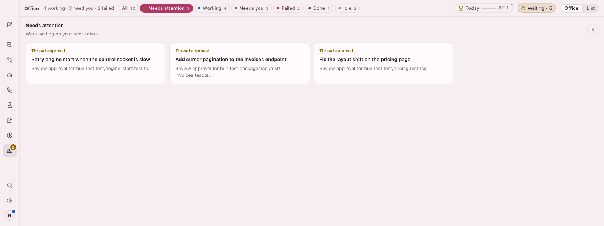
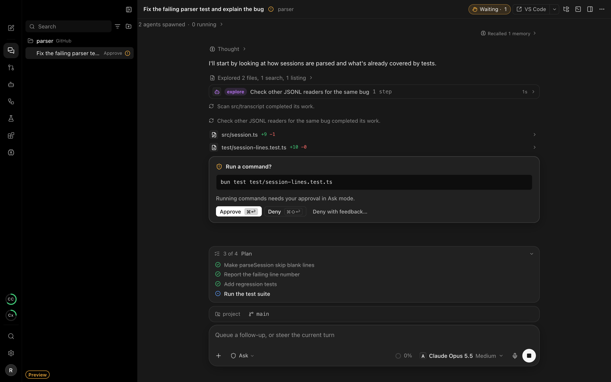
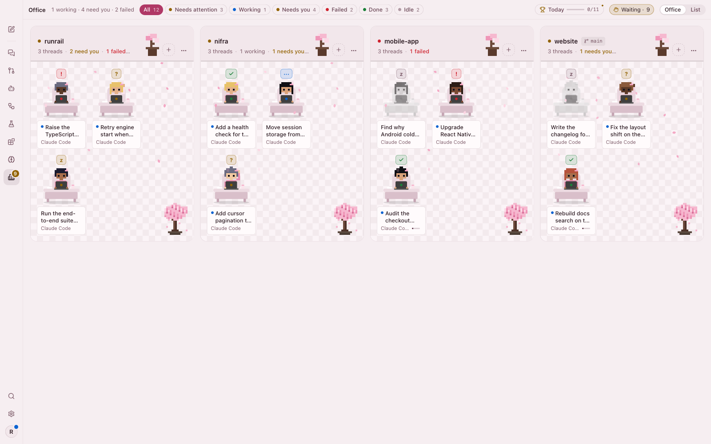
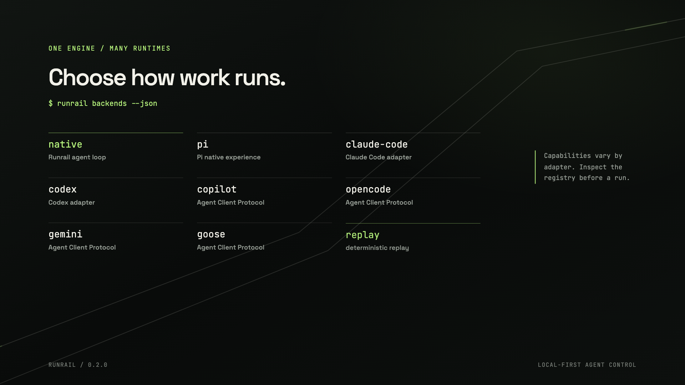

Know what needs you.
Approvals, questions, and check failures come together in one focused view.

RUNRAIL DESKTOP
Run coding agents side by side. Keep every thread, change, and approval in view—and the final say yours.
macOS · Linux · Windows (experimental) · Free and open source
macOS and Windows may show a first-launch security prompt. See install notes.

The Office gathers active projects, agent threads, and the moments that need your attention—so you can zoom out without losing context.

Separate workspaces keep experiments safe. Clear approval controls keep you in charge.
Approvals, questions, and check failures come together in one focused view.

Bring Claude Code, Codex, Copilot, or Pi into one workflow—or run Runrail’s agent with a model you connect.

Give every thread its own worktree. Compare approaches side by side, inspect the diffs, and keep the version you choose.
See all featuresTHE ENGINE UNDER THE DESKTOP
Runrail’s local-first engine keeps agent work inspectable. This short film shows the Runrail engine and CLI—not the Desktop interface.
Explore the Runrail enginemacOS · Linux · Windows